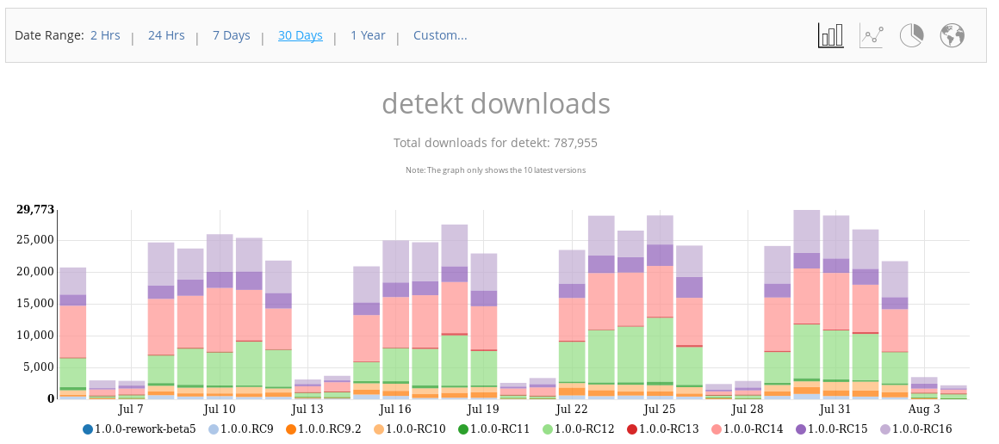

Calling it One Zero
Today we are announcing the 1.0 release of detekt, a static code analysis tool for Kotlin. It operates on the abstract syntax tree provided by the Kotlin compiler and finds common programming flaws like unused or too complex constructs. Think of it as pmd or checkstyle but for Kotlin.
1.0 offers the following features:
- Code smell analysis for your Kotlin projects
- Complexity reports based on lines of code, cyclomatic complexity and amount of code smells
- Highly configurable rule sets
- Suppression of findings with Kotlin’s
@Suppressand Java’s@SuppressWarningsannotations - Specification of quality gates which will break your build
- Code Smell baseline for legacy projects
- Gradle plugin for code analysis via Gradle builds
- Gradle tasks to use local
IntelliJdistribution for formatting and inspecting Kotlin code - SonarQube integration
- Extensibility by enabling incorporation of personal rule sets,
FileProcessListener'sandOutputReport's - IntelliJ integration
- Unofficial Maven plugin by Ozsie
Here are some metrics describing detekt’s lifespan so far:

detekt is almost 3 years old already!
As GitHub tells us the project is pretty active.
You may argue that in 2018 it was more active looking at the number of commits, however that year
we also changed our merge strategy from merge-with-rebase to squash-and-merge.
That said, it is much harder to achieve these high commit numbers now ;).

There are 2516 commits, 52 releases on GitHub and a total 93 contributors at the time of writing. 20 out of the 93 authors contributed once or more in the last three months.

~780k downloads in the last 30 days is a pretty high number… three months ago it was around 500k. Weekends clearly stand out. That’s when the CI has to rest ;).
This does however not mean one download equals one user. There are like eight detekt modules each with a jar and pom which needs to be downloaded. As most of the downloads are bound to be CI, it is hard to calculate the actual number of detekt users.

What I also noticed is the high number of “early adopters” in the Kotlin world (or just detekt).
- RC09 was released in Sep 2018
- RC10 was released in Nov 2018
- RC11 was released in Nov 2018
- RC12 was released in Dec 2018
- RC14 was released in Feb 2019
- RC15 was released in Jun 2019
- RC16 was released in Jun 2019
65% of users are on a version published in 2019. But we clearly lost some users in the older versions due to breaking changes in RC13 and RC15. We are excited to see how many users will jump on the 1.x.x release train and how these numbers will look like.
Last but not least here is a worldmap of where detekt users are coming from.

References:
- https://bintray.com/arturbosch/code-analysis/detekt#statistics
- https://github.com/detekt/detekt/graphs/contributors